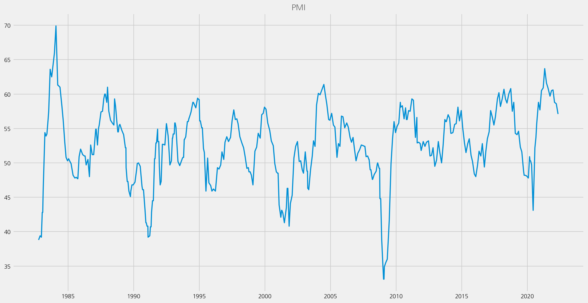

Plots
Contents
Plots#
%config InlineBackend.figure_format='retina'
import logging
from ekorpkit import eKonf
logging.basicConfig(level=logging.WARNING)
print(eKonf.__version__)
0.1.33+20.g8433774.dirty
Load a feature set#
cfg = eKonf.compose(config_group="dataset=feature")
cfg.name = "fomc_features_small"
cfg.path.cache.uri = (
"https://github.com/entelecheia/ekorpkit-book/raw/main/data/fomc_features_small.zip"
)
cfg.data_dir = cfg.path.cached_path
f_small = eKonf.instantiate(cfg)
print(f_small)
f_small.data.tail()
FeatureSet : fomc_features_small
| date | target | prev_decision | GDP_diff_prev | PMI | EMP_diff_prev | RSALES_diff_year | UNEMP_diff_prev | HSALES_diff_year | Inertia_diff | Balanced_diff | split | |
|---|---|---|---|---|---|---|---|---|---|---|---|---|
| 410 | 1995-12-19 | Cut | 0.0 | 0.850665 | 45.9 | 0.122002 | 1.821768 | 1.818182 | 2.786378 | 0.0 | 0.0 | test |
| 411 | 2020-03-19 | Hold | -1.0 | 0.469098 | 50.3 | 0.247160 | 2.227724 | 0.000000 | 8.150470 | 0.0 | 0.0 | test |
| 412 | 2010-10-15 | Hold | 0.0 | 0.967705 | 56.3 | -0.049838 | 5.069603 | 0.000000 | -17.875648 | 0.0 | 0.0 | test |
| 413 | 2016-06-15 | Hold | 0.0 | 0.589180 | 51.0 | 0.028502 | 0.710158 | -5.882353 | 13.745020 | 0.0 | 0.0 | test |
| 414 | 1995-04-28 | Hold | 0.0 | 1.145518 | 52.1 | 0.179953 | 1.689996 | 0.000000 | -17.536814 | 0.0 | 0.0 | test |
Lineplot#
cfg = eKonf.compose(config_group="visualize/plot=lineplot")
cfg.plot.x = "date"
cfg.plot.y = "PMI"
cfg.figure.figsize = (15, 8)
cfg.ax.title = "PMI"
eKonf.instantiate(cfg, data=f_small.data)
